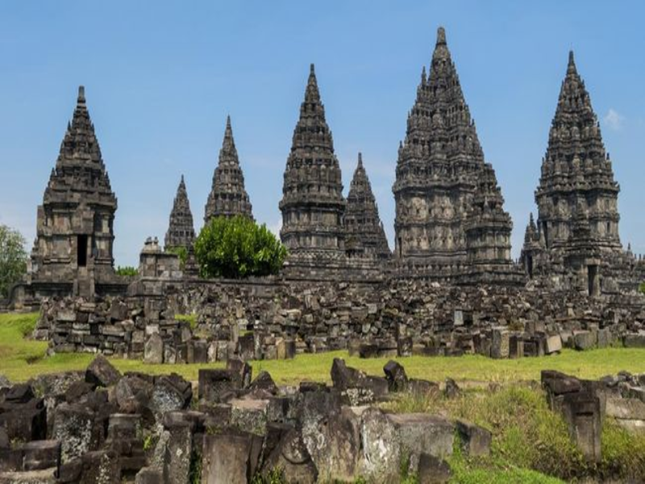

Menikmati Candi Prambanan
Candi Prambanan terletak di lingkungan Taman Wisata Prambanan, kurang lebih 17 km ke arah timur dari Yogyakarta, tepatnya di Desa Prambanan Kecamatan Bokoharjo. Lokasinya hanya sekitar 100 m dari jalan raya Yogya-Solo, sehingga tidak sulit untuk menemukannya. Sebagian dari kawasan wisata yang yang terletak pada ketinggian 154 m di atas permukaan laut ini termasuk dalam wilayah Kabupaten Sleman. sedangkan sebagian lagi masuk dalam wilayah Klaten. Candi Prambanan merupakan candi Hindu yang terbesar di Indonesia. Sampai saat ini belum dapat dipastikan kapan candi ini dibangun dan atas perintah siapa, namun kuat dugaan bahwa Candi Prambanan dibangun sekitar pertengahan abad ke-9 oleh raja dari Wangsa Sanjaya, yaitu Raja Balitung Maha Sambu. Dugaan tersebut didasarkan pada isi Prasasti Syiwagrha yang ditemukan di sekitar Prambanan dan saat ini tersimpan di Museum Nasional di Jakarta. Prasasti berangka tahun 778 Saka (856 M) ini ditulis pada masa pemerintahan Rakai Pikatan. Pemugaran Candi Prambanan memakan waktu yang sangat panjang, seakan tak pernah selesai. Penemuan kembali reruntuhan bangunan yang terbesar, yaitu Candi Syiwa, dilaporkan oleh C.A. Lons pada tahun 1733. Upaya penggalian dan pencatatan pertama dilaksanakan di bawah pengawasan Groneman. Penggalian diselesaikan pada tahun 1885, meliputi pembersihan semak belukar dan pengelompokan batu-batu reruntuhan candi. Pada tahun 1902, upaya tersebut dilanjutkan kembali oleh van Erp. Pengelompokan dan identifikasi batu-batu reruntuhan dilaksanakan secara lebih rinci. Pada tahun 1918, pemugaran terhadap Candi Prambanan dilanjutkan kembali di bawah pengawasan Dinas Purbakala (Oudheidkundige Dienst) yang dipimpin oleh P.J. Perquin. Melalui upaya ini, sebagian dari reruntuhan Candi Syiwa dapat direkonstruksi kembali. Pada tahun 1926, dibentuk sebuah panitia pemugaran di bawah pimpinan De Haan untuk melanjutkan upaya yang telah dilaksanakan Perquin. Di bawah pengawasan panitia ini, selain pembangunan kembali Candi Syiwa semakin disempurnakan hasilnya, dimulai juga persiapan pembangunan Candi Apit. Pada tahun 1931, De Haan meninggal dan digantikan oleh V.R. van Romondt. Pada tahun 1932, pemugaran kedua Candi Apit berhasil dirampungkan. Pemugaran terpaksa dihentikan pada tahun 1942, ketika Jepang mengambil alih pemerintahan di Indonesia. Setelah melalui proses panjang dan tersendat-sendat akibat perang dan peralihan pemerintahan, pada tahun 1953 pemugaran Candi Syiwa dan dua Candi Apit dinyatakan selesai. Sampai saat ini, pemugaran Candi Prambanan masih terus dilaksanakan secara bertahap Denah asli Candi Prambanan berbentuk persegi panjang, terdiri atas halaman luar dan tiga pelataran, yaitu Jaba (pelataran luar), Tengahan (pelataran tengah) dan Njeron (pelataran dalam). Halaman luar merupakan areal terbuka yang mengelilingi pelataran luar. Pelataran luar berbentuk bujur dengan luas 390 m2. Pelataran ini dahulu dikelilingi oleh pagar batu yang kini sudah tinggal reruntuhan. Pelataran luar saat ini hanya merupakan pelataran kosong. Belum diketahui apakah semula terdapat bangunan atau hiasan lain di pelataran ini. Di tengah pelataran luar, terdapat pelataran kedua, yaitu pelataran tengah yang berbentuk persegi panjang seluas 222 m2. Pelataran tengah dahulu juga dikelilingi pagar batu yang saat ini juga sudah runtuh. Pelataran ini terdiri atas empat teras berundak, makin ke dalam makin tinggi. Di teras pertama, yaitu teras yang terbawah, terdapat 68 candi kecil yang berderet berkeliling, terbagi dalam empat baris oleh jalan penghubung antarpintu pelataran. Di teras kedua terdapat 60 candi, di teras ketiga terdapat 52 candi, dan di teras keempat, atau teras teratas, terdapat 44 candi. Seluruh candi di pelataran tengah ini mempunyai bentuk dan ukuran yang sama, yaitu luas denah dasar 6 m2 dan tinggi 14 m. Hampir semua candi di pelataran tengah tersebut saat ini dalam keadaan hancur. Yang tersisa hanya reruntuhannya saja. Pelataran dalam, merupakan pelataran yang paling tinggi letaknya dan yang dianggap sebagai tempat yang paling suci. Pelataran ini berdenah persegi empat seluas 110 m2, dengan tinggi sekitar 1,5 m dari permukaan teras teratas pelataran tengah. Pelataran ini dikelilingi oleh turap dan pagar batu. Di keempat sisinya terdapat gerbang berbentuk gapura paduraksa. Saat ini hanya gapura di sisi selatan yang masih utuh. Di depan masing-masing gerbang pelataran teratas terdapat sepasang candi kecil, berdenah dasar bujur sangkar seluas 1, 5 m2 dengan tinggi 4 m. Di pelataran dalam terdapat 2 barisan candi yang membujur arah utara selatan. Di barisan barat terdapat 3 buah candi yang menghadap ke timur. Candi yang letaknya paling utara adalah Candi Wisnu, di tengah adalah Candi Syiwa, dan di selatan adalah Candi Brahma. Di barisan timur juga terdapat 3 buah candi yang menghadap ke barat. Ketiga candi ini disebut candi wahana (wahana = kendaraan), karena masing-masing candi diberi nama sesuai dengan binatang yang merupakan tunggangan dewa yang candinya terletak di hadapannya. Candi yang berhadapan dengan Candi Wisnu adalah Candi Garuda, yang berhadapan dengan Candi Syiwa adalah Candi Nandi (lembu), dan yang berhadapan dengan Candi Brahma adalah Candi Angsa. Dengan demikian, keenam candi ini saling berhadapan membentuk lorong. Candi Wisnu, Brahma, Angsa, Garuda dan Nandi mempunyai bentuk dan ukuran yang sama, yaitu berdenah dasar bujur sangkar seluas 15 m2 dengan tinggi 25 m. Di ujung utara dan selatan lorong masing-masing terdapat sebuah candi kecil yang saling berhadapan, yang disebut Candi Apit.
Indahnya candi Prambanan
Untuk menikmati keindahan dan juga kemegahan objek wisata candi prambanan ini maka Anda bisa langsung saja datang ke Provinsi Jawa tengah. Tahukah Anda jika ternyata objek wisata yang satu ini berada pada perbatasan Klaten atau lebih tepatnya berada di desa Prambanan, Kabupaten Klaten, Jawa Tengah.
Objek wisata yang satu sangat ramai dikunjungi oleh berbagai wisatawan setiap harinya, dan julah kunjungannya akan terus meningkat disaat musim liburan tiba. Anda akan merasakan sensasi yang berbeda jika mengunjungi objek wisata yang satu ini. Sehingga tidak heran jika banya wisatawan mancanegara juga menyukai wisata sejarah yang satu ini.

Cara Menuju Lokasi Candi Prambanan
Kota Terdekat dari Prambanan adalah Yogyakarta (17 km barat daya) dan Klaten (3 km utara). Candi Prambanan mudah diakses karena berada di jalan raya Solo - Yogya. Dari kota Yogyakarta anda dapat menggunakan transportasi umum Transjogja yang berhenti di halte pasar Prambanan. Semua bus antar kota jurusan Solo juga bisa mengantar anda sampai depan candi Prambanan.
Kota Solo dan Yogyakarta memiliki Bandara Internasional. Saat ini, Bandara Internasional Yogyakarta, melayani rute penerbangan internasional dari Singapura dan Kuala Lumpur. Sedangkan Bandara Adi Soemarmo Solo melayani rute penerbangan internasional dari Kuala Lumpur.